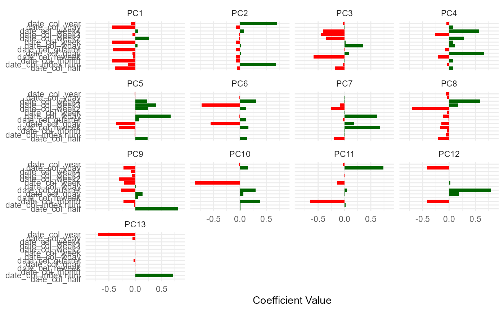
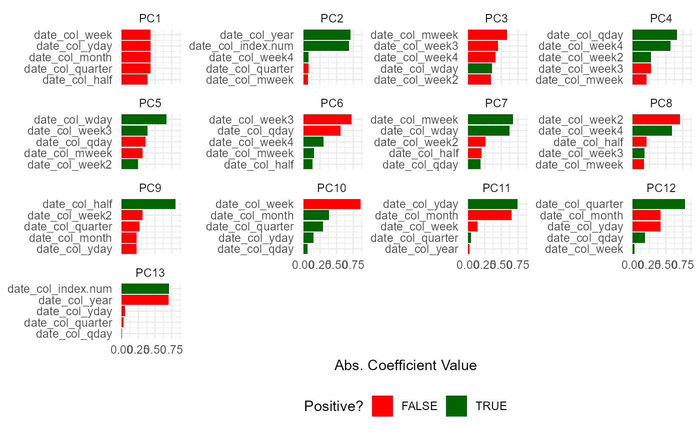
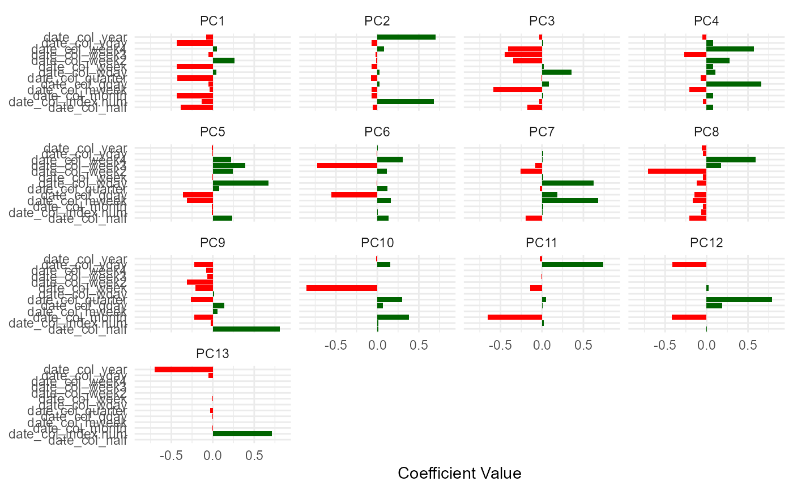
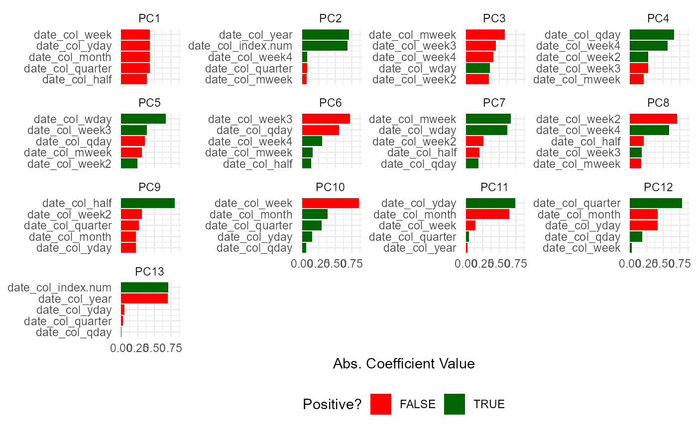

This is a simple function that will perform PCA analysis on a passed recipe.
Arguments
- .recipe_object
The recipe object you want to pass.
- .data
The full data set that is used in the original recipe object passed into
.recipe_objectin order to obtain the baked data of the transform.- .threshold
A number between 0 and 1. A fraction of the total variance that should be covered by the components.
- .top_n
How many variables loadings should be returned per PC
Details
This is a simple wrapper around some recipes functions to perform a PCA on a given recipe. This function will output a list and return it invisible. All of the components of the analysis will be returned in a list as their own object that can be selected individually. A scree plot is also included. The items that get returned are:
pca_transform - This is the pca recipe.
variable_loadings
variable_variance
pca_estimates
pca_juiced_estimates
pca_baked_data
pca_variance_df
pca_rotattion_df
pca_variance_scree_plt
pca_loadings_plt
pca_loadings_plotly
pca_top_n_loadings_plt
pca_top_n_plotly
See also
https://recipes.tidymodels.org/reference/step_pca.html
Other Data Recipes:
hai_data_impute(),
hai_data_poly(),
hai_data_scale(),
hai_data_transform(),
hai_data_trig()
Examples
suppressPackageStartupMessages(library(timetk))
suppressPackageStartupMessages(library(dplyr))
suppressPackageStartupMessages(library(purrr))
suppressPackageStartupMessages(library(healthyR.data))
suppressPackageStartupMessages(library(rsample))
suppressPackageStartupMessages(library(recipes))
suppressPackageStartupMessages(library(ggplot2))
suppressPackageStartupMessages(library(plotly))
data_tbl <- healthyR_data %>%
select(visit_end_date_time) %>%
summarise_by_time(
.date_var = visit_end_date_time,
.by = "month",
value = n()
) %>%
set_names("date_col", "value") %>%
filter_by_time(
.date_var = date_col,
.start_date = "2013",
.end_date = "2020"
) %>%
mutate(date_col = as.Date(date_col))
splits <- initial_split(data = data_tbl, prop = 0.8)
rec_obj <- recipe(value ~ ., training(splits)) %>%
step_timeseries_signature(date_col) %>%
step_rm(matches("(iso$)|(xts$)|(hour)|(min)|(sec)|(am.pm)"))
output_list <- pca_your_recipe(rec_obj, .data = data_tbl)
#> Warning: ! The following columns have zero variance so scaling cannot be used:
#> date_col_day, date_col_mday, and date_col_mday7.
#> ℹ Consider using ?step_zv (`?recipes::step_zv()`) to remove those columns
#> before normalizing.
output_list$pca_variance_scree_plt
 output_list$pca_loadings_plt

output_list$pca_top_n_loadings_plt

output_list$pca_loadings_plt

output_list$pca_top_n_loadings_plt
